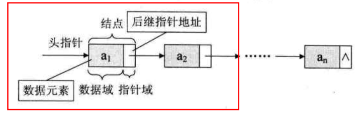
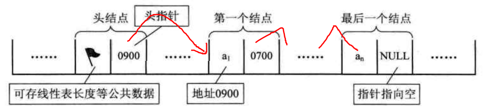
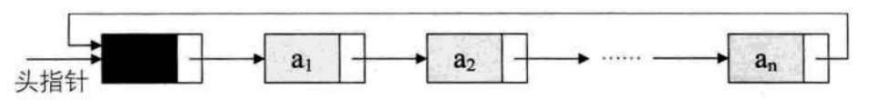
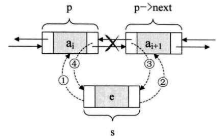
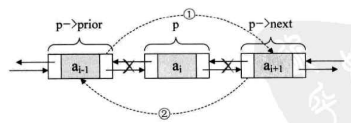
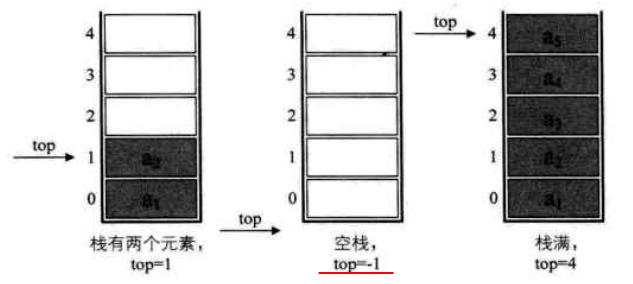
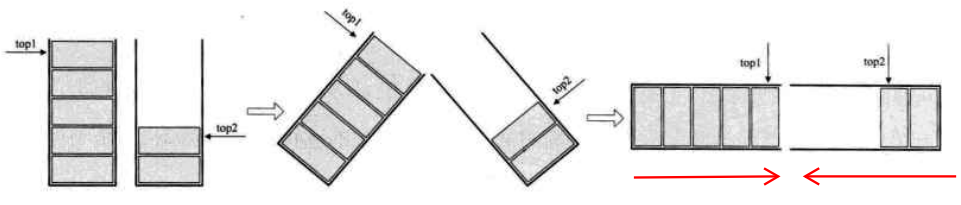
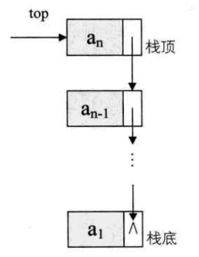
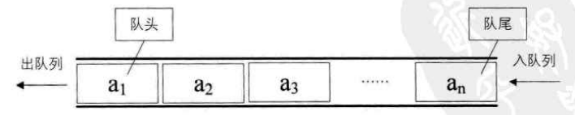

最近刷算法题发现能想到用什么数据结构来高效率解题，太弱了具体实现和用法却不会。以前上学没好好听课，现在来恶补一下数据结构。
按照视点的不同，数据结构分为逻辑结构 和物理结构 。
逻辑结构：指数据元素之间的逻辑关系，这里的逻辑关系是指数据元素之间的前后关系，与数据在计算机中的存储位置无关。
物理结构：指数据的逻辑结构在计算机中的存储形式，也叫做存储结构。
数据的逻辑结构主要分为线性结构 和非线性结构 。
线性结构：数据元素之间是一对一线性关系，所有结点都最多只有一个直接前趋结点和一个直接后继结点。常见的有数组、队列、链表、栈 。
非线性结构：数据元素之间具有多个对应关系，一个结点可能有多个直接前趋结点和多个直接后继结点。常见的有多维数组、广义表、树结构和图结构等。
数据的物理结构（存储结构） ，表示数据元素之间的逻辑关系的存储形式，数据的逻辑结构根据需要可以采用多种存储结构，常用的存储结构有：
顺序存储：存储顺序是连续的，在内存中用一组地址连续的存储单元依次存储线性表的各个数据元素，其数据间的逻辑关系和物理关系是一致的。
链式存储：把数据元素存放在任意的存储单元里，这组存储单元不一定是连续的，元素节点存放数据元素和通过指针指向相邻元素的地址信息。
索引存储：除建立存储结点信息外，还建立附加的索引表来标识节点的地址。索引表由若干索引项组成。
散列存储：也称Hash存储，由节点的关键码值决定节点的存储地址。
常用的数据结构有：
数组（Array）
链表（Linked List）
栈（Stack）
队列（Queue）
串（String）
树（Tree）
散列表（Hash）
堆（Heap）
图（Graph）
数组（Array） 数组是最基本最常用的数据结构，是一种线性表顺序存储结构，用一段地址连续的内存空间来存储相同类型的数据元素，可通过数组名和下标进行数据的访问和更新。
优点：
无须为表示数组元素之间的逻辑关系而增加额外的存储空间
可以快速地存取表中任一位置的元素
缺点：
插入和删除操作需要移动大量元素
当数组长度变化较大时，难以确定存储空间的容量
造成存储空间的“碎片”
链表（Linked List） 单链表 用一组任意的存储单元存储线性表的数据元素，是一种物理存储单元上非连续的存储结构。
在链式结构中，除了存储数据元素信息（数据域 ），还要存储它的后继元素的地址（指针域 ），这两部分信息组成结点 。链表的每个结点只包含一个指针域称为单链表，对指针域进行反向链接，还可以形成双向链表或者循环链表。

为了更加方便地对链表进行操作，会在单链表的第一个结点前附设一结点，称为头结点 。头结点的数据域可以不储存任何信息，也可以储存链表的长度等公共数据。若链表为空表，则头结点的指针域为空（NULL）。

链表和数组在实际的使用过程中需要根据自身的优劣势进行选择，区别对比如下：
数组
链表
内存地址
连续的内存空间
任意的内存空间
访问方式
随机访问
顺序访问
线性表长度
长度固定，一般不可动态扩展
长度可动态变化
增删效率
低，需要移动被修改元素后的所有元素
高，只需修改指针指向
查询效率
高，可通过数组名和下标直接访问O(1)
低，只能通过遍历节点一次查询O(n)
单链表及常用操作C++实现如下：
1 2 3 4 5 6 7 8 9 10 11 12 13 14 15 16 17 18 19 20 21 22 23 24 25 26 27 28 29 30 31 32 33 34 35 36 37 38 39 40 41 42 43 44 45 46 47 48 49 50 51 52 53 54 55 56 57 58 59 60 61 62 63 64 65 66 67 68 69 70 71 72 73 74 75 76 77 78 79 80 81 82 83 84 85 86 87 88 89 90 91 92 93 94 95 96 97 98 99 100 101 102 103 104 105 106 107 108 109 110 111 112 113 114 115 116 117 118 119 120 121 122 123 124 125 126 127 128 129 130 131 132 133 134 135 136 137 138 139 140 141 142 143 144 145 146 147 148 149 150 151 152 153 154 155 156 157 158 159 160 161 162 163 164 165 166 167 168 169 170 171 172 173 174 175 176 177 178 179 180 181 182 183 184 185 186 187 188 189 190 191 192 193 194 195 196 #include <iostream> using namespace std;class Node { public : int data; Node *next; }; class LinkList { public : LinkList (); ~LinkList (); void CreateLinkList (int n) void TravalLinkList () int GetLength () bool IsEmpty () Node *Find (int data) ; void InsertElemAtEnd (int data) void InsertElemAtIndex (int data,int n) void InsertElemAtHead (int data) void DeleteElemAtEnd () void DeleteAll () void DeleteElemAtPoint (int data) void DeleteElemAtHead () private : Node *head; }; LinkList::LinkList (){ head = new Node; head->data = 0 ; head->next = nullptr ; } LinkList::~LinkList (){ Node *ptem = nullptr ; while (head->next){ ptem = head; head = head->next; delete ptem; } delete head; head = nullptr ; } void LinkList::CreateLinkList (int n) if (n<=0 ) cout<<"n error" <<endl; else { Node *pnew,*ptem; ptem = head; for (int i=0 ;i<n;i++){ pnew = new Node; cout << "input " << i + 1 << " value " ; cin>>pnew->data; pnew->next = nullptr ; ptem->next = pnew; ptem = pnew; } } } void LinkList::TravalLinkList () if (head->next==nullptr ) cout<<"Empty LinkList" <<endl; else { Node *p = head; while (p->next!=nullptr ){ p = p->next; cout<<p->data<<" " ; } } } int LinkList::GetLength () Node *p = head; int count = 0 ; while (p->next){ count++; p = p->next; } return count; } bool LinkList::IsEmpty () if (head->next) return false ; return true ; } Node *LinkList::Find (int data) { Node *p = head; while (p->next){ if (p->data==data) return p; p = p->next; } return nullptr ; } void LinkList::InsertElemAtEnd (int data) Node *p = head; Node *pnew = new Node; pnew->data = data; pnew->next = nullptr ; while (p->next){ p = p->next; } p->next = pnew; } void LinkList::InsertElemAtIndex (int data,int n) if (n<1 || n>GetLength ()) cout<<"n error" <<endl; else { Node *p = head; Node *pnew = new Node; pnew->data = data; int i = 1 ; while (i<n){ p = p->next; i++; } pnew->next = p->next; p->next = pnew; } } void LinkList::InsertElemAtHead (int data) Node *pnew = new Node; pnew->data = data; pnew->next = head->next; head->next = pnew; } void LinkList::DeleteElemAtEnd () Node *p = head; Node *ptem = nullptr ; while (p->next){ ptem = p; p = p->next; } delete p; p = nullptr ; ptem->next = nullptr ; } void LinkList::DeleteAll () Node *p = head->next; Node *ptem = new Node; while (p){ ptem = p; p = p->next; head->next = p; delete ptem; } head->next = nullptr ; } void LinkList::DeleteElemAtPoint (int data) Node *ptem = new Node; Node *p = head; while (p->data!=data){ ptem = p; p = p->next; } ptem->next = p->next; delete p; p = nullptr ; } void LinkList::DeleteElemAtHead () Node *p = head->next; head->next = p->next; delete p; p = nullptr ; }
循环链表 将单链表中终端结点的指针端由空指针改为指向头结点，就使整个单链表形成一个环，这种头尾相接的单链表称为单循环链表，简称循环链表（circuar linkedlist)。循环链表解决了一个很麻烦的问题即如何从当中一个结点出发，访问到链表的全部结点。

为了方便查找开始结点和终端结点，不再使用头指针，而是用指向终端结点的尾指针 来表示循环链表。
约瑟夫环问题 ：已知n个人（以编号0,1,2,3,…,n）分别表示）围坐在一张圆桌周围。从编号0的人开始报数，数到m的那个人出列；他的下一个人又从1开始报数，数到m的那个人又出列：依此规律重复下去，知道圆桌周围的人全都出列。
1 2 3 4 5 6 7 8 9 10 11 12 13 14 15 16 17 18 19 20 21 22 23 24 25 26 27 28 29 30 31 32 33 34 35 36 37 38 39 40 41 42 43 44 45 46 47 48 49 50 51 52 53 54 55 56 57 58 59 60 61 62 63 64 65 66 67 68 69 70 71 72 73 74 75 76 77 78 79 80 81 82 83 84 85 86 87 88 89 90 91 92 93 94 95 96 97 98 99 100 101 102 103 104 105 106 107 108 109 110 111 112 113 114 115 116 117 118 119 120 121 122 123 124 125 126 127 128 129 130 131 132 133 134 135 136 137 138 139 140 141 142 143 144 145 # include <iostream> using namespace std;struct Node { int data; Node *next; }; class CircleList {private : Node *head; public : CircleList (); ~CircleList (); void CreateCircleList (int n) void InsertCircleList (int pos,int data) void DeleteCircleList () void DeleteNode (int pos) void TravalCircleList () int GetLength () Node *GetHead () ; }; CircleList::CircleList (){ head = new Node; head->data = 0 ; head->next = head; } CircleList::~CircleList (){ Node *ptem = head->next; while (ptem!=head){ head->next = ptem->next; delete ptem; ptem = head->next; } delete head; head = nullptr ; } void CircleList::CreateCircleList (int n) if (n<=0 ){ cout<<"n error" <<endl; }else { Node *pnew, *ptem = head; for (int i=0 ;i<n;i++){ pnew = new Node; cout << "input " << i + 1 << " value " ; cin>>pnew->data; pnew->next= head; ptem->next = pnew; ptem = pnew; } } } int CircleList::GetLength () int len = 0 ; Node *p = head->next; while (p!=head){ len++; p = p->next; } return len; } void CircleList::InsertCircleList (int pos,int data) if (pos>GetLength ()||pos<1 ){ cout<<"pos error" <<endl; }else { Node *pnew = new Node; Node *p = head; while ((pos--)>1 ){ p = p->next; } pnew->data = data; pnew->next = p->next; p->next = pnew; } } void CircleList::DeleteNode (int pos) Node *p = head,*pd; if (pos==0 ){ while (p->next!=head){ p = p->next; } head = head->next; }else if (pos>0 ){ while (pos-->1 ){ p = p->next; } } pd = p->next; p->next = pd->next; delete pd; pd = nullptr ; } void CircleList::DeleteCircleList () Node *ptem = head->next; while (ptem!=head) { head->next = ptem->next; delete ptem; ptem = head->next; } } void CircleList::TravalCircleList () Node *ptem = head->next; if (ptem==head){ cout<<"empty" <<endl; }else { while (ptem!=head){ cout<<ptem->data<<" " ; ptem = ptem->next; } } } Node *CircleList::GetHead () { return head; } int main () int m,n; cout<<"n m" <<endl; cin>>n>>m; CircleList clist; clist.CreateCircleList (n-1 ); Node *p = clist.GetHead (),*pre; for (int i=1 ;i<n;i++){ for (int j=1 ;j<m;j++){ pre = p; p = p->next; } cout<<"delete: " <<p->data<<endl; pre->next = p->next; delete p; p = pre->next; } }
用数学方式解决属实没看懂，参考 ：在 n 个数中最后留下来的数 = 在 n 中去除第 m 个数后剩下 n-1 个数中留下来的数。在0-n-1个数：0，1，2，m-2，m-1，m，…，n-1，去除一个m-1后，剩下为：0，1，2，m-2，m，…，n-1，在这 n-1 个数中，每次计数需要从 m 开始，推导公式 f(n,m)=(f(n−1,m)+m)%n
1 2 3 4 5 6 7 8 9 10 11 12 class Solution {public : int lastRemaining (int n, int m) if (n == 0 || m == 0 ) return -1 ; int s = 0 ; for (int i = 2 ; i <= n; i++) { s = (s + m) % i; } return s; } };
双向链表 双向链表（double linkedlist）是在单链表的每个结点中，再设置一个指向其前驱结点的指针域。
在插入和删除时，需要修改两个指针变量。假设存储元素 e 的结点为 s，要实现将结点 s 插入到结点 p 和 p->next 之间需要下面几步。先搞定 s 的前驱和后继，再搞定后结点的前驱，最后解决前结点的后继。

1 2 3 4 s->prior = p; s->next = p->next; p->next->prior = s; p->next = s;
若要删除结点 p，只需要下面两个步骤

1 2 3 p->prior->next = p->next; p->next->prior = p->prior; delete
栈（Stack） 栈（Stack） 是限定仅在表尾进行插入和删除操作的线性表。
允许插入和删除的一端称为栈顶(top)，另一端称为 栈底(bottom)，不含任何数据元素的栈称为 空栈 。栈又称为**后进先出(LIFO)**的线性表，简称 LIFO 结构。
栈是线性表的特例，也有两种典型的存储方式：基于数组的顺序存储（顺序栈 ）和基于链表的链式存储（链式栈 ）
顺序栈 用数组下标为 0 的一端作为栈底，数组最大允许存放元素个数为 maxSize，定义一个 top 变量来指示栈顶元素在数组中的位置，top = -1 时，置栈为空。

1 2 3 4 5 6 7 8 9 10 11 12 13 14 15 16 17 18 19 20 21 22 23 24 25 26 27 28 29 30 31 32 33 34 35 36 37 38 39 40 41 42 43 44 45 46 47 48 49 50 51 52 53 54 55 56 57 # include <iostream> using namespace std;class SeqStack {private : int *data; int top; int maxSize; public : SeqStack (int ms=10 ); ~SeqStack (); void Push (int x) void Pop () int GetTop () bool IsEmoty () void MakeEmpty () -1 ;}; int GetSize () return top+1 ;}; }; SeqStack::SeqStack (int ms){ maxSize = ms; data = new int [maxSize]; top = -1 ; } SeqStack::~SeqStack (){ delete []data; } void SeqStack::Push (int x) if (top == maxSize-1 ){ cout<<"stack overflow!" <<endl; }else { data[++top] = x; } } void SeqStack::Pop () if (top == -1 ){ cout<<"stack empty!" <<endl; }else { top--; } } int SeqStack::GetTop () if (top == -1 ){ cout<<"stack empty!" <<endl; exit (EXIT_FAILURE); }else { return data[top]; } } bool SeqStack::IsEmoty () return (top == -1 )? true :false ; }
如果有两个相同类型的栈，我们为它们各自开辟了数组空间，极有可能是第一个栈已经满了，再进栈就溢出了，而另一个栈还有很多存储空间空闲。我们完全可以用一个数组来存储两个栈，数组有两个端点，两个栈有两个栈底，让一个栈的栈底为数组的始端，即下标为 0 处，另一个栈为栈的末端，即下标为数组长度 maxSize-1 处。这样两个栈如果增加元素，就是两端点向中间延伸。

当然，这只是针对两个具有相同数据类型的栈的一个设计上的技巧，如果不是相同数据类型的栈，或者是多个栈共享栈空间，这种办法不但不能更好地处理问题，反而会使问题变得更复杂。
链式栈 栈的链式存储结构，简称为链式栈。链式栈的栈顶在链表的表头，栈的插入和删除操作都在表头（不需要头结点）。

1 2 3 4 5 6 7 8 9 10 11 12 13 14 15 16 17 18 19 20 21 22 23 24 25 26 27 28 29 30 31 32 33 34 35 36 37 38 39 40 41 42 43 44 45 46 47 48 49 50 51 52 53 54 55 56 57 58 59 60 61 62 63 64 65 66 67 68 69 70 71 72 73 74 # include <iostream> using namespace std;struct Node { int data; Node *next; }; class LinkStack { private : Node *top; public : LinkStack (){top = nullptr ;}; ~LinkStack (); void Push (int x) void Pop () int GetTop () int GetSize () void MakeEmpty () }; LinkStack::~LinkStack (){ Node *p; while (top != nullptr ){ p = top; top = top->next; delete p; } } void LinkStack::Push (int x) Node *pnew = new Node; pnew->data = x; pnew->next = top; top = pnew; } void LinkStack::Pop () if (top != nullptr ){ Node *pd = top; top = top->next; delete pd; }else cout<<"stack empty" <<endl; } int LinkStack::GetTop () if (top != nullptr ){ return top->data; }else { cout<<"stack empty" <<endl; exit (EXIT_FAILURE); } } int LinkStack::GetSize () Node *p = top; int count = 0 ; while (p != nullptr ){ count++; p = p->next; } return count; } void LinkStack::MakeEmpty () Node *p; while (top != nullptr ){ p = top; top = top->next; delete p; } }
栈的应用 现在许多高级语言，都对栈结构进行了封装，可以不用关注它的实现细节，可以直接使用 stack 的 push 和 pop 等方法。
把一个直接或间接调用自己的函数，称为递归函数 。每个递归定义必须至少有一个条件，满足时递归不再进行，即不再引用自身而是返回值退出。
利用后缀表达 法书写表达式不需要括号，也称为逆波兰表示(RPN)。后缀表达式的计算：从左到右遍历表达式的每个数字和操作符，遇到是数字就进栈，遇到是操作符 op，就将栈顶连续两个数字 X(先) 和 Y(后) 出栈，进行运算 Y op X，计算结果进栈，直到表达式所有项都遍历处理完，栈顶存放的就是表达式最终的结果。
1 2 3 4 5 6 7 8 9 10 11 12 13 14 15 16 17 18 19 20 21 22 23 24 25 26 27 28 29 # include <iostream> # include <stack> # include <string> using namespace std;int main () string exp; stack<int > st; cin>>exp; for (int i=0 ;i<exp.length ();i++){ if (exp[i]>='0' && exp[i]<='9' ) st.push (exp[i]-'0' ); else { int x = st.top (); st.pop (); int y = st.top (); st.pop (); switch case '+' : st.push (y+x);break ; case '-' : st.push (y-x);break ; case '*' : st.push (y*x);break ; case '/' : st.push (y/x);break ; default : break ; } } cout<<st.top ()<<endl; } }
上述代码看着正确，运行也正确，可是有个很大的缺陷，只能计算 10 以内的加减乘除表达式。
编译程序利用后缀表达法仅用一个栈就可以很快算出表达式的值，而我们平时用的都是标准的四则运算表达式(中缀表达式)，如何将中缀表达转换为后缀表达 ？
手工方式
栈的方式
规则：从左到右遍历中缀表达式的每个数字和符号，若是数字就输出，即成为后缀表达式的一部分；若是符号，则判断其与栈顶符号的优先级，是右括号或优先级不高于栈顶符号(乘除优先加减），则栈顶元素依次出栈并输出操作符元素，并将当前符号进栈，一直到最终输出后缀表达式为止。
队列（Queue） 队列是只允许在表的一端插入，另一端删除的线性表。是一种先进先出(FIFO)结构的线性表，运行插入的一端为队尾，允许删除的一端为队头。

循环队列 循环队列是基于数组的存储方式，把数组的前端和后端连接起来，形成一个环形的表，用 front 和 rear 分别指示队列的队头和队尾元素下一位置，初始化时都置为 0，maxSize 是数组的最大长度。在队尾插入新元素和队头删除元素时，队尾和队头指针分别按顺时针方向进 1，两指针进到 maxSize -1 后，再进一个位置就自动到 0。
队头指针进 1：front = (front+1)%maxSize
队尾指针进 1：rear = (rear+1)%maxSize
如果循环列表读取元素速度快于存储速度，队头很快追上队尾，当 front == rear 时，队列就变成空队列；如果列表存储元素速度快于读取速度，队尾很快追上队头，当 (rear+1)%maxSize == front 时，队列已满。在循环列表中，最多存放 maxSize-1 个元素。
1 2 3 4 5 6 7 8 9 10 11 12 13 14 15 16 17 18 19 20 21 22 23 24 25 26 27 28 29 30 31 32 33 34 35 36 37 38 39 40 41 42 43 44 45 46 47 48 49 50 51 52 53 54 # include <iostream> using namespace std;class SeqQueue { private : int rear,front; int *data; int maxSize; public : SeqQueue (int ms = 10 ); ~SeqQueue (); bool IsFull () return ((rear+1 )%maxSize==front)?true :false ;} void EnQueue (int x) void DeQueue () int GetFront () int GetSize () return (rear-front+maxSize)%maxSize;} }; SeqQueue::SeqQueue (int ms){ maxSize = ms; rear = front = 0 ; data = new int [maxSize]; } SeqQueue::~SeqQueue (){ delete []data; } void SeqQueue::EnQueue (int x) if (IsFull ()==true ){ cout<<"Queue is full" <<endl; }else { data[rear] = x; rear = (rear+1 )%maxSize; } } void SeqQueue::DeQueue () if (rear == front){ cout<<"Queue is empty" <<endl; }else { front = (front+1 )%maxSize; } } int SeqQueue::GetFront () if (rear == front){ cout<<"Queue is empty" <<endl; exit (EXIT_FAILURE); }else { return data[front]; } }
链式队列 链式队列是基于单链表的存储方式，队列的队头指针指向单链表的第一个结点，队尾指针指向单链表的最后一个结点。
1 2 3 4 5 6 7 8 9 10 11 12 13 14 15 16 17 18 19 20 21 22 23 24 25 26 27 28 29 30 31 32 33 34 35 36 37 38 39 40 41 42 43 44 45 46 47 48 49 50 51 52 53 54 55 56 57 58 59 60 61 62 63 64 65 66 67 68 69 70 71 72 73 74 75 76 77 78 79 80 81 82 83 # include <iostream> using namespace std;struct Node { int data; Node *next; }; class LinkQueue {private : Node *front,*rear; public : LinkQueue (); ~LinkQueue (); bool Isempty () return (front==nullptr )? true :false ;} void EnQueue (int x) void DeQueue () int GetFront () int GetSize () void MakeEmpty () }; LinkQueue::LinkQueue (){ front = rear = nullptr ; } LinkQueue::~LinkQueue (){ MakeEmpty (); } void LinkQueue::EnQueue (int x) if (front == nullptr ){ front = rear = new Node; rear->data = x; rear->next = nullptr ; }else { Node *pn = new Node; pn->data = x; pn->next = nullptr ; rear->next = pn; rear = pn; } } void LinkQueue::DeQueue () if (Isempty ()){ cout<<"Queue is empty" <<endl; exit (EXIT_FAILURE); }else { Node *p = front; front = front->next; delete p; } } int LinkQueue::GetFront () if (Isempty ()){ cout<<"Queue is empty" <<endl; exit (EXIT_FAILURE); }else { return front->data; } } int LinkQueue::GetSize () Node *p = front; int count = 0 ; while (p!=nullptr ){ p = p->next; count++; } return count; } void LinkQueue::MakeEmpty () Node *pd; while (front!=nullptr ){ pd = front; front = front->next; delete pd; } }
队列应用 二项展开式 (a+b)^i 的系数，其系数构成杨辉三角。
1 2 3 4 5 6 7 8 9 10 11 12 13 14 15 16 17 18 19 20 21 22 23 24 # include <iostream> # include <queue> using namespace std;int main () int n; int i,j,t,s=0 ; cin>>n; queue<int > q; q.push (1 ); q.push (1 ); for (i=1 ;i<=n;i++){ q.push (0 ); for (j=1 ;j<=(i+2 );j++){ t = q.front (); q.pop (); q.push (s+t); s = t; if (s) cout<<s<<" " ; } cout<<endl; } return 0 ; }